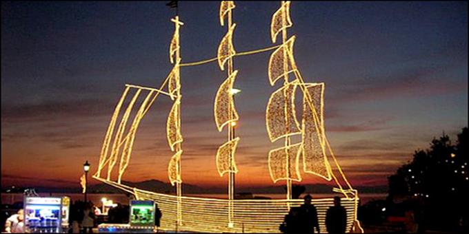
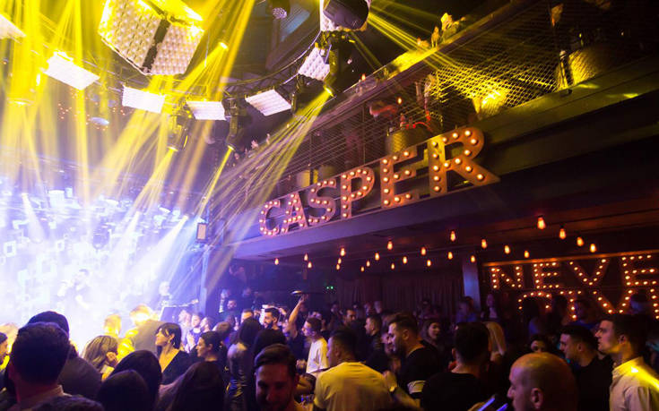
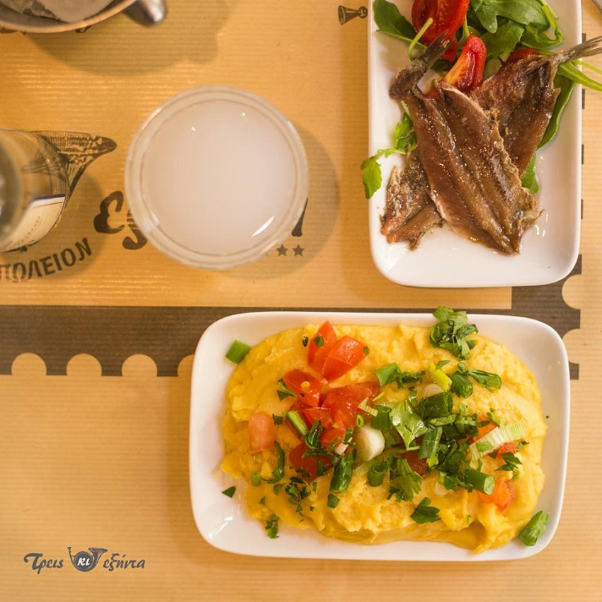

Για δέκα ημέρες, η Θεσσαλονίκη ζούσε σε ρυθμούς… φεστιβαλικούς, καθώς μέχρι τις 12 Δεκεμβρίου ξετυλίγονταν πλάι στον Θερμαϊκό τα καρέ του 51ου Φεστιβάλ Κινηματογράφου. Η γιορτή της έβδομης τέχνης τελείωσε, αλλά δεν τελείωσε καθόλου η όρεξη των Θεσσαλονικέων –όπως και όλων των υπόλοιπων- να περπατήσουν στα στέκια της πόλης «που δεν κοιμάται ποτέ», ούτε και την περίοδο των γιορτών.
 Αν ένας χώρος στη Θεσσαλονίκη έχει ταυτίσει το όνομά του με την νυχτερινή ζωή στην πόλη, αυτός δεν είναι άλλος από το Casper, στα Λαδάδικα. Στεγασμένο σε ένα τριώροφο κτήριο, εκεί όπου παλαιότερα έβρισκε κανείς το θρυλικό Βερύκοκο, το Casper αποτελεί δημοφιλή και καθιερωμένο προορισμό για εκείνους που ξέρουν πώς να διασκεδάζουν.
 Χύμα ουζάκι, τσιπουράκι ή ρακή των 50ml με δύο συνοδευτικά ντιπάκια της επιλογής σας, ανάμεσα από μία ποικιλία 24 πιάτων, μόνο με 3.60€. Έτσι βγήκε το όνομα του μαγαζιού, το οποίο έχει αποκτήσει το δικό του φανατικό κοινό. Εξαιρετικά θαλασσινά και κρεατικά σε προσιτές τιμές, σε έναν όμορφο χώρο στον πεζόδρομο της Καλαμαριάς.